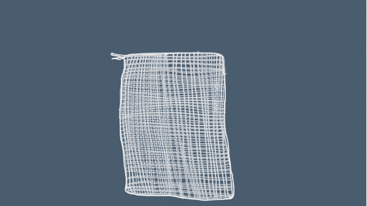
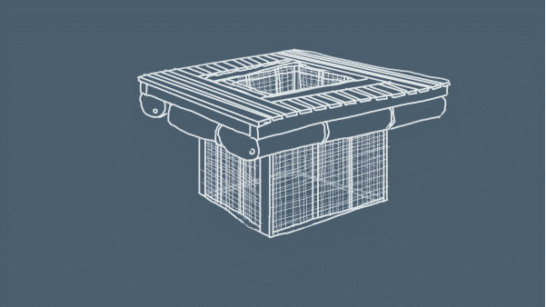
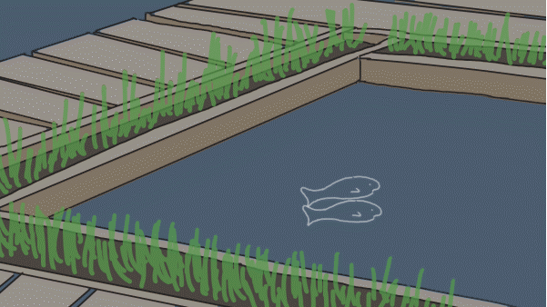
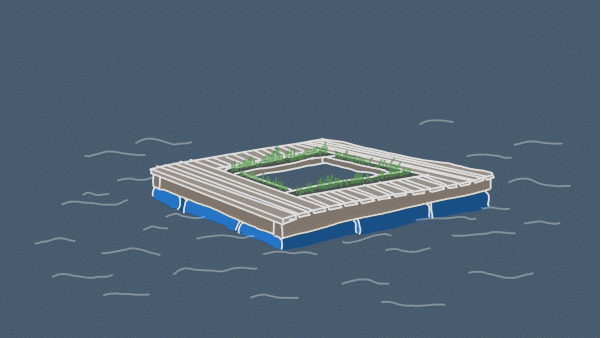

The Bio Pool is a collaboration with Eric Blasco of ERB Gardens. This speculative
biological design project is a modular system of bio-remediation of waterways using biochar as a substrate
to collect, store, and remove excess and harmful microorganisms, nutrients, and minerals from waterways as a
result of runoff and pollution. The first Bio Pool was installed in the Schuylkill River at Bartram’s Garden
in Philadelphia through the support of the Toolkit for Wetland Grant
from the Penn Program in the Environmental Humanities. It
continues to be a habitat for native wetland plants and wildlife on the river.
The Bio Pool was also presented on April 15th, 2017 at the University of Pennsylvania in the Ecotopian Toolkit Conference.



